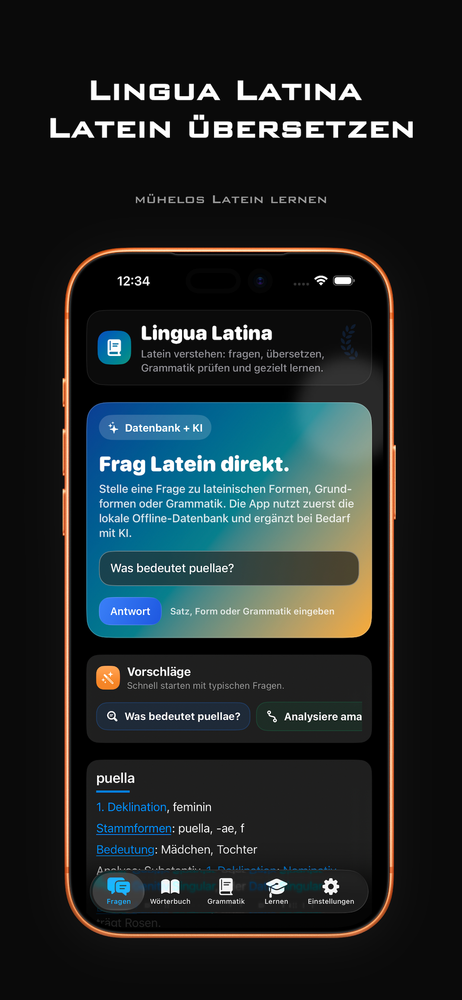
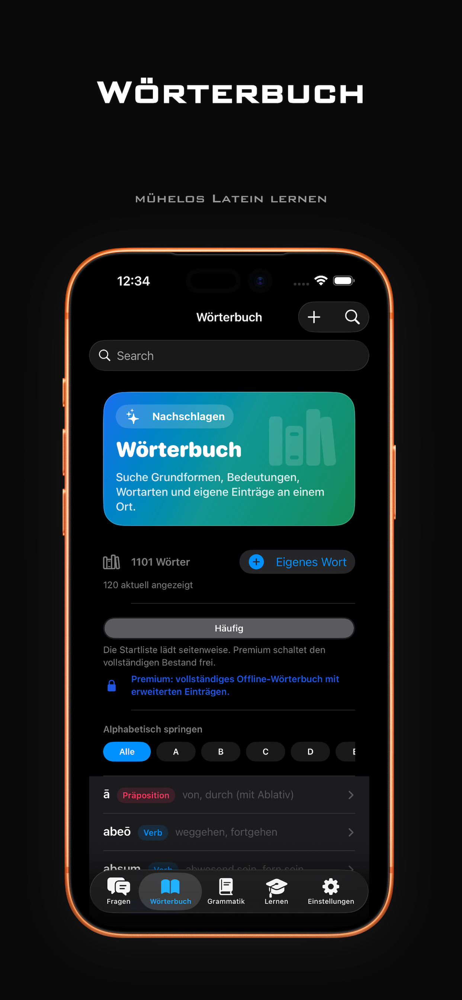
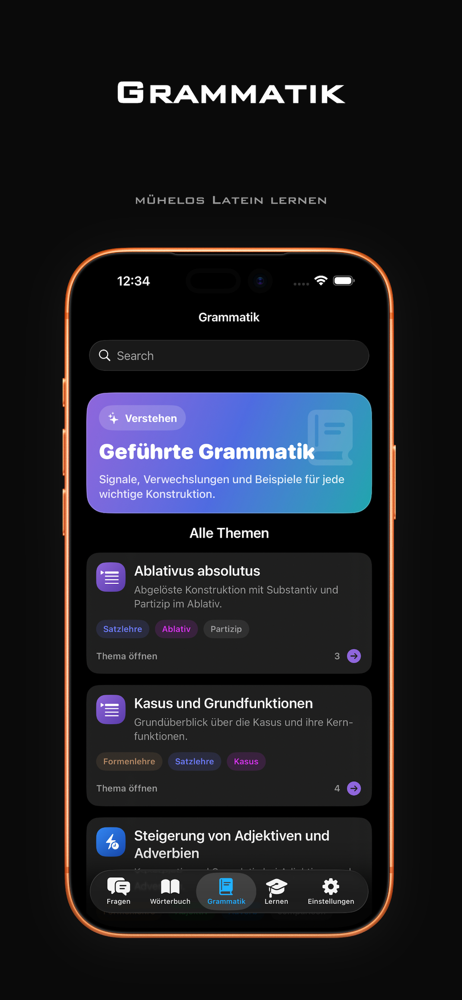
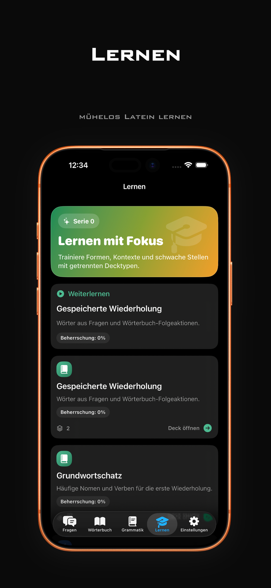
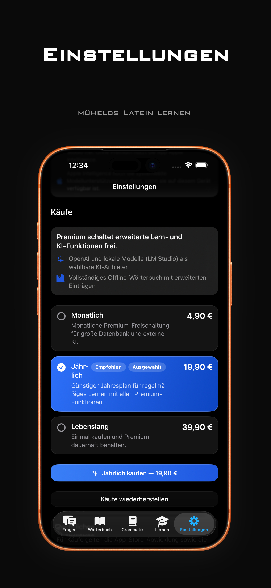
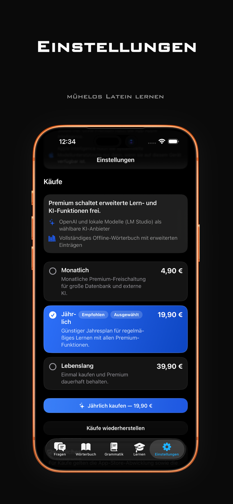
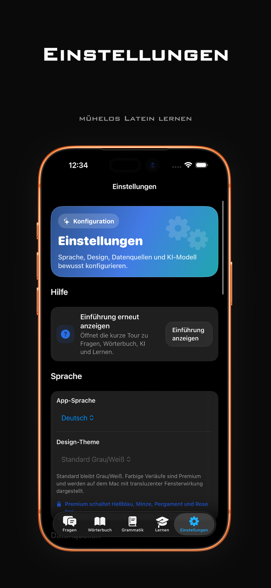

01
Fragen & Übersetzen
Frage nach Formen, Bedeutungen und ganzen Sätzen. Die lokale Datenbank hilft zuerst, KI ergänzt nur bei Bedarf.
Ansicht ansehenMühelos Latein lernen
Lingua Latina verbindet Wörterbuch, Grammatik, Satzanalyse und Lernen in einer klaren App für den Alltag.

Eine ruhige Lernumgebung
Finde Formen, erkenne Strukturen und wiederhole genau dort, wo du weiterkommen möchtest.
Die wichtigsten Bereiche
Frage nach Formen, Bedeutungen und ganzen Sätzen. Die lokale Datenbank hilft zuerst, KI ergänzt nur bei Bedarf.
Ansicht ansehenGrundformen, Bedeutungen, Wortarten und eigene Einträge an einem Ort. Schnell suchen, sauber vergleichen.
Ansicht ansehenGeführte Themen, Signale und Beispiele machen wichtige Konstruktionen verständlicher.
Ansicht ansehenTrainiere Formen, Kontexte und schwache Stellen mit getrennten Decks und gespeicherten Wiederholungen.
Ansicht ansehenFür den täglichen Gebrauch
„Latein lernen, ohne den Faden zu verlieren.“
Eine fokussierte Oberfläche, verständliche Erklärungen und die Werkzeuge genau an der Stelle, an der du sie brauchst.
Ein Blick in die App
Die Screenshots zeigen die deutsche Oberfläche in dunkler Darstellung – von der Wortanalyse bis zur gezielten Wiederholung.






Privat lernen
Kein Konto, keine Werbung, kein Tracking und keine Entwickler-Telemetrie. Einstellungen, Favoriten und Lernfortschritt werden lokal gespeichert.
Datenschutzerklärung lesenBereit für den nächsten Satz?